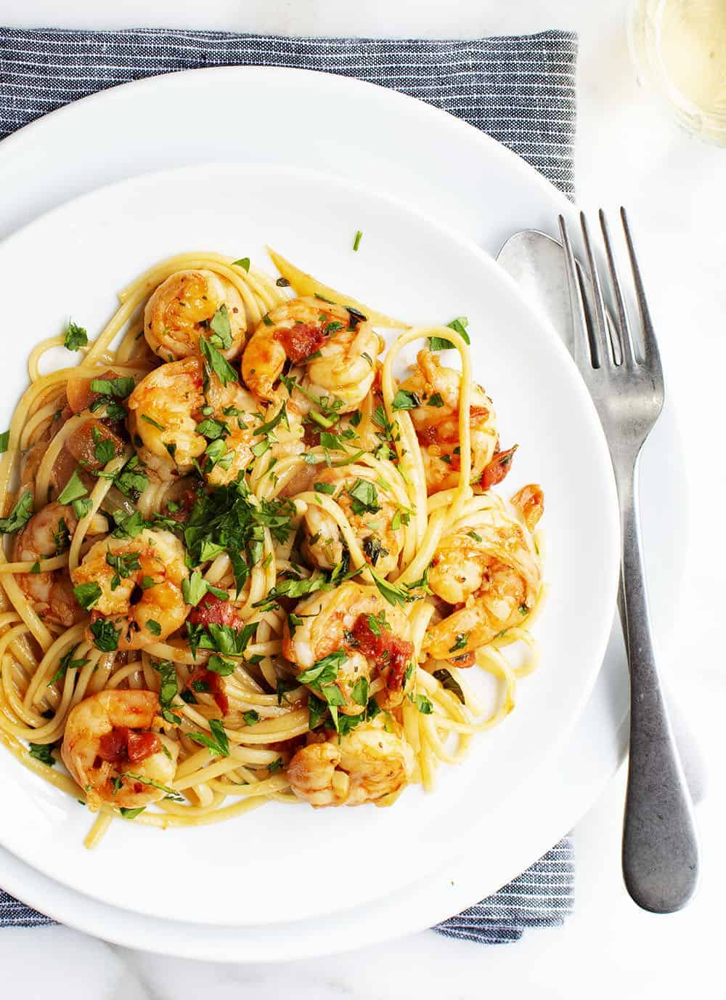

Shrimp Fra Diavolo

Description
Shrimp Fra Diavolo, translated as 'brother devil' in Italian, earns its name with a spicy red pepper kick. Tender, succulent shrimp and al dente pasta are tossed in a rich, tomato based sauce embellished with garlic, good olive oil, white wine and fresh herbs. A truly memorable dish that you can prepare in about 30 minutes.
The main thing I like to do differently is to toss the buttery shrimp and spicy tomato sauce with pasta. It makes this dish a satisfying meal on its own and ensures that you don't waste a drop of the silky sauce. And you don't need much pasta to make a perfect Shrimp Fra Diavolo, just a couple of ounces per person. It's a dish that tastes decadent, but won't expand your waistline.
Ingredients
1 pound medium shrimp
1 teaspoon fine sea salt
1 teaspoon crushed red pepper flakes
4 tablespoons olive oil
1 medium onion
8 ounces dry linguine
14 ½ ounce can diced tomatoes
1 cup dry white wine
3 large cloves garlic
½ teaspoon dried oregano
¼ cup chopped fresh basil leaves
¼ cup chopped fresh Italian parsley
Steps
- Add shrimp, salt and crushed red pepper to a medium bowl and toss to coat.
- Heat 3 tablespoons of olive oil in a large skillet over medium-high heat. Add shrimp; cook and stir until cooked through, about 2 minutes. Transfer shrimp to plate and set aside.
- To the same skillet add remaining tablespoon of olive oil and onion; cook and stir 5 minutes, or until translucent.
- Add tomatoes with juices, wine, garlic and oregano. Reduce heat; stir and simmer 10 minutes or until sauce is slightly thickened.
- Meanwhile, cook linguine in a large pot according to package directions (see recipe note #1) until al dente; drain (do not rinse).
- Add shrimp and pasta to tomato mixture; toss well to combine. Stir in basil and parsley; serve